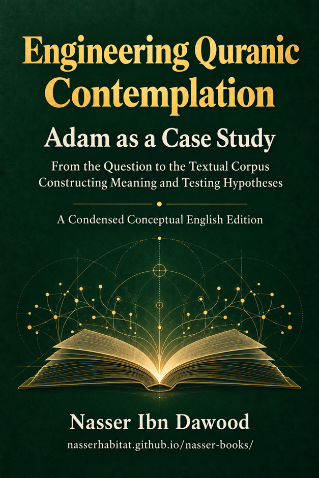

Nasser Ibn Dawood

Text extracted from the author-supplied Word edition; consult the original source.
Preparing the reader…
Engineering Quranic
Contemplation
Adam as a Case Study
From the Question to the Textual Corpus
Constructing Meaning and Testing Hypotheses
Nasser Ibn Dawood
A Condensed Conceptual English Edition
A practical guide to the fiqh of the Quranic tongue
and the mathani method
Five parts • Twenty chapters • Appendices A to E
1 October 2026
I. The Global Knowledge Manifesto
Knowledge is a universal right. The author firmly believes that wisdom should not be locked behind paywalls or language barriers.
Global Access Policy: All books in this library are available for free in multiple digital formats (PDF, HTML, DOCX, TXT).
The Digital Library: As of early 2026, the collection hosts 68 volumes (34 in Arabic and 34 in English), fully optimized for AI-assisted research and digital archiving.
Official Platforms:
Main Website: nasserhabitat.github.io/nasser-books/
GitHub: nasserhabitat/nasser-books
Collection note. The count above is retained as the author's supplied historical statement for early 2026. On 1 October 2026, the library homepage lists 69 Arabic and 69 English titles. The earlier figure has not been independently verified.
II. Translator’s Note: The Bridge of Meaning
This English edition is a condensed conceptual adaptation. It is not a word-for-word translation, but rather an "extraction of essence." It presents the core philosophical framework in accessible English, omitting the exhaustive linguistic debates and classical references found in the original Arabic text.
For the academic researcher: The original Arabic version remains the primary source for comprehensive linguistic analysis, detailed exegesis (Tafsir), and the complete bibliography.
Edition note. The Arabic edition is the primary reference for the author's fuller argument. The scope of its linguistic analysis, exegesis, and references must be assessed from that edition itself; these words do not certify an exhaustive classical survey or bibliography in the present book.
Reading this English edition
This book examines how a claim about the Quran can be investigated, questioned, and revised. Its central case is Adam, whose narrative connects learning, responsibility, temptation, error, repentance, and guidance. The reader needs no prior knowledge of Arabic to follow the argument. Where an argument depends on Arabic word structure, this edition explains the issue and preserves its uncertainty rather than treating an English rendering as linguistic proof.
The five parts follow the Arabic book's twenty chapters. Each chapter presents a complete condensed argument. Part One introduces the research tools in Chapters 1 to 4. Part Two investigates Adam's identity, responsibility, the names, and prostration in Chapters 5 to 8. Part Three examines choice, the tree, temptation, and recovery in Chapters 9 to 13. Part Four distinguishes creation, origination, coming into being, and the question of recreation in Chapters 14 to 16. Part Five teaches the reader to examine a claim and repeat the method independently in Chapters 17 to 20. Appendices A to E provide reference lists, a hypothesis register, a glossary, and a reusable research worksheet.
How to read the evidence labels
[Textual paraphrase] marks a brief English representation of a Quranic passage, accompanied by its chapter and verse reference. It is an interpretive aid, not the Arabic Quran itself, and must be checked against the cited passage. This edition does not reproduce a named published English translation.
[Observation] describes something a reader can inspect, such as the order of actions or a change of speaker. [Hypothesis] proposes an explanation that requires testing. [Candidate] identifies a proposal that has gained support while retaining unresolved conditions. [Stable finding] records a conclusion supported within the stated corpus and the tests performed. Stability remains limited to that scope and permits later revision. OPEN is a status attached to a claim whose investigation has not been completed; it is not an additional rank of evidence.
We also distinguish explanation and inference from an operational model. An explanation describes relationships; an inference derives a conclusion from stated premises; an operational model organizes a human practice, such as learning or reviewing a decision. A useful model does not establish the physical nature of Adam, the tree, or revelation.
References use the form 2:31, meaning chapter 2, verse 31 of the Quran. The Quranic text governs the investigation. The author's previous books can supply questions and tools, but each new conclusion requires evidence from its own corpus. The governing rule remains: Previous Book ≠ Evidence for New Corpus.
Major Introduction
Why Adam Is a Laboratory for Reflective Reading
This book begins with a provocative question: will Adam be created anew? Its purpose, however, is to discover what a carefully bounded inquiry can establish. Resurrection, the repetition of an original pattern, the recreation of a particular person, and a technological imitation of human abilities are different questions. Evidence for one cannot silently become evidence for all.
The author calls the method “the engineering of Quranic contemplation.” Engineering here means the deliberate organization of inquiry: preserve the text, define the question, assemble a corpus, describe relationships, propose explanations, and test their limits. It does not imply that the Quran is a manual of mechanical engineering. The author's “fiqh of the Quranic tongue” is an inquiry into how Quranic expressions function in their textual relationships; the term is broader here than jurisprudence alone.